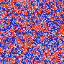

|  |
Exploration of Schelling's Model
By Will Knez
|
This project presents three popular variations of Thomas Schelling's
(1971) work on residential segregation. The basic premise is as
follows: consider a grid of nxn cells, a certain percentage of
which are vacant and the rest are divided amongst members of two groups.
Each group has a numeric quantity, called the tolerance, that determines
the proportion of same-group members that must be nearby in order for an
agent of that group to consider the neighborhood satisfactory. If there
are too few, the agent becomes unhappy and will try to find a new
location next round. The three variations of these rules are:
- Liquid - in addition to unhappy agents that search for
new places of residence, a "happy" agent may also elect to move
to a location that is equally as satisfactory as her current
location. This allows the model to continue indefinately.
- Solid - only unhappy agents may move to acceptable, vacant
locations.
- Swap - same mechanics as the solid variation but with no
vacant cells. Instead, unhappy agents swap places with each
directly.
Agent groups can be configured using the "Groups" tab and other parameters
such as the neighborhood size, evaluation method, and statistics
tracking can be found on the "Model" tab. Finally, the "Displays" tab
allows access to the statistics window.